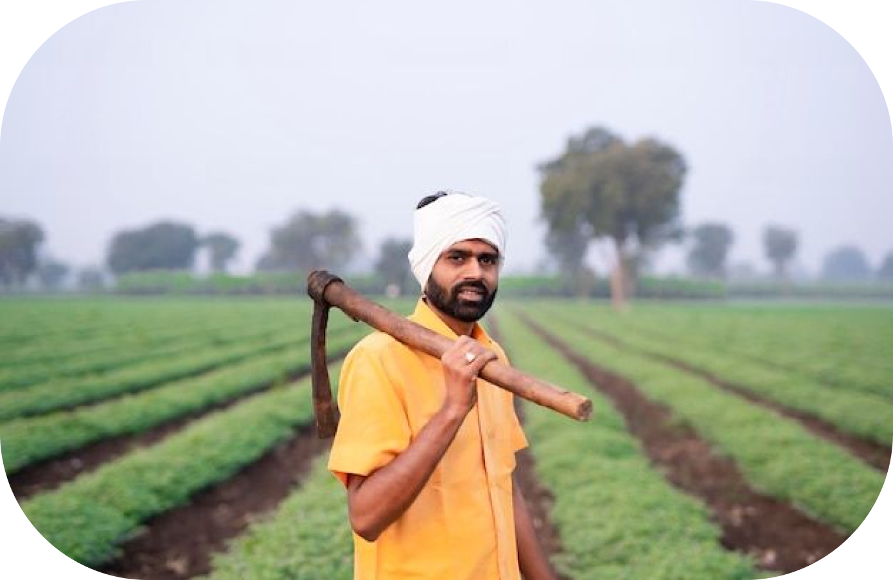
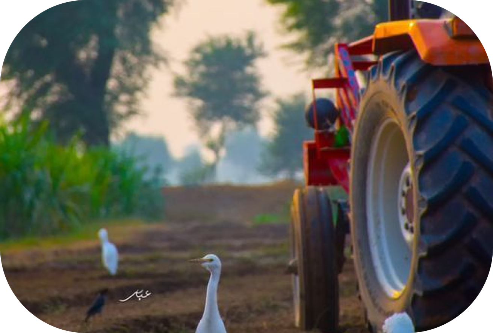

Meet Our Farmers
Meet the Growers
Passion for Sustainability
Artisanal Expertise
Learn about the dedicated individuals behind the produce, their stories,
and their commitment to providing fresh, high-quality goods.
Discover the sustainable farming practices employed by our farmers and
their efforts to contribute to a healthier environment.
Explore the craft and skill that goes into the production of handmade
goods, and support the artisans creating these unique offerings.

